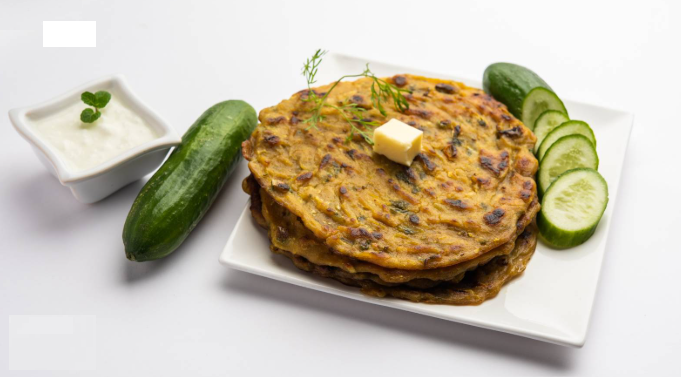
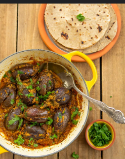
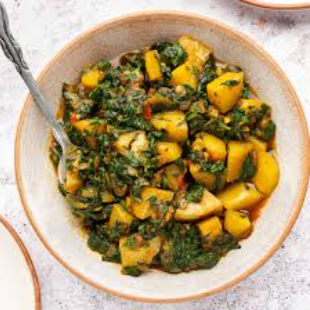
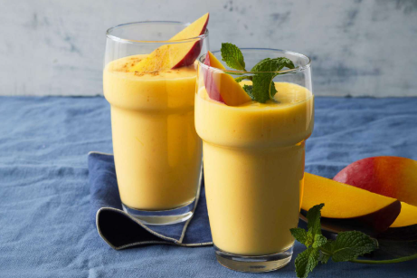

CATEGORIES
STRAIGHT FROM OUR KITCHEN TO YOURS♡
Cucumber Paratha
Cucumber Paratha is a popular savory flatbread from Maharashtra made with rice flour, semolina, fresh grated cucumber, green chilies, and herbs.
more...
Stuffed Brinjal
Stuffed Brinjal means stuffed baingan. Without making any masala, this bhaji tastes super delicious.
more...
Potato spinach veggie
Aloo palak is a classic North Indian dish that combines the comforting earthiness of potatoes (aloo) with the nutritious, slightly bitter notes of spinach (palak).
more...
Mango Smoothie
Mango Lassi is a popular lassi variety made with Indian yogurt (dahi/ curd), ripe sweet mangoes and cardamoms.